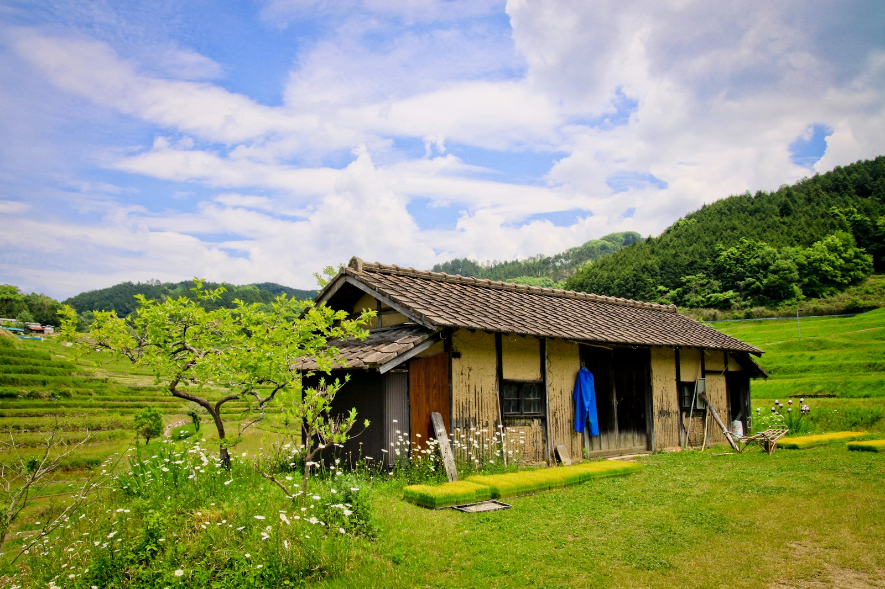

個人のお客様
住まいを決めるための確認
- 中古住宅を購入する前に状態を知りたい
- 相続した家の活用・修繕・売却を考えたい
- リフォーム前に優先する箇所を整理したい
写真付きの報告書で、気になる箇所と補修の優先順位を分かりやすくお伝えします。
個人のお客様向け料金を見るホームインスペクション・建物調査
個人のお客様にも、不動産・住宅事業者の方にも。見た目だけでは分かりにくい建物の状態を確認し、次の判断に必要な情報を分かりやすく整理します。
ご利用の方
どの調査が必要か決まっていなくても大丈夫です。今の状況を伺い、確認する範囲を整理します。
個人のお客様
写真付きの報告書で、気になる箇所と補修の優先順位を分かりやすくお伝えします。
個人のお客様向け料金を見る不動産・住宅事業者の方
物件情報と利用目的を確認し、調査範囲・日程・必要な資料を事前にご案内します。
事業者向け調査料金を見る主な調査内容
建物の種類、調査目的、現地の状況に応じて確認範囲を決めます。原則として、仕上げ材を壊さない目視中心の調査です。
基礎、外壁、屋根を見られる範囲、軒裏、バルコニーなどの状態を確認します。
床、壁、天井、建具などを確認し、傾きや雨漏り跡など気になる点を整理します。
点検口から目視できる範囲を確認します。進入して行う詳細調査はオプションです。
確認箇所を写真で記録し、劣化箇所、緊急度、補修の優先順位をまとめます。

建物の構造や立地、点検口の有無、家具・荷物の状況などにより確認できない箇所があります。調査は瑕疵がないことを保証するものではありません。
料金表（税込）
建物の規模や所在地、現地の条件によって追加費用が生じる場合があります。ご依頼前に調査内容と料金を確認します。
| プラン | 料金 | 内容 |
|---|---|---|
| マンション | 55,000円 | 専有部目視調査・設備確認・写真付報告書 |
| 戸建住宅 延床40坪まで | 66,000円 | 外部・内部・小屋裏点検口確認・写真付報告書 |
| 40坪超 | ＋550円／㎡ または＋1,100円／坪 | 延床面積加算。算定方法は事前にご案内します。 |
| プラン | 料金 |
|---|---|
| マンション | 55,000円 |
| 戸建住宅 | 66,000円 |
国土交通省ガイドラインに準拠します。
| エリア | 出張費 |
|---|---|
| エリアA | 無料 前橋市・高崎市・伊勢崎市・渋川市・玉村町・吉岡町・榛東村 |
| 県内その他 | ＋5,500円 |
| 県外 | 別途お見積り |
| 内容 | 料金 |
|---|---|
| 床下詳細調査 | 16,500円 |
| 小屋裏詳細調査 | 13,200円 |
| 赤外線サーモグラフィ調査 | 16,500円 |
| 給排水設備確認 | 11,000円 |
| シロアリ被害確認 | 11,000円 |
| 耐震アドバイス（一次診断レベル） | 22,000円 |
| リフォーム概算見積アドバイス | 11,000円 |
| 建物購入相談（60分） | 11,000円 |
| 報告書特急対応（翌営業日） | 11,000円 |
写真付報告書
調査内容に応じて、約40〜60ページ、写真100枚以上を目安にまとめます。
ご依頼の流れ
物件所在地、建物の種類、希望内容をお知らせください。
図面など、お手元にある資料を確認します。
調査範囲、日程、料金について事前に確認します。
決定した内容に沿って建物を確認します。
写真と所見をまとめ、確認事項をご説明します。
よくある質問
はい。購入前に建物の状態を確認し、判断材料を整理するためのご相談を想定しています。売主様や仲介会社との調整が必要な場合があります。
まずはお手元にある物件資料を確認します。図面がない場合も、建物の種類や状況を伺ったうえで対応方法をご案内します。
目視できる範囲を中心とした非破壊調査のため、仕上げ材の内部や確認できない箇所まで判断することはできません。調査範囲と限界は事前にご案内します。
調査結果を踏まえた修繕の優先順位や、リフォーム内容の整理についてもご相談いただけます。内容によって別途料金をご案内します。
県外は別途お見積りです。場所とご希望の調査内容を確認して対応可否をご案内します。
お問い合わせ
分かる範囲で、物件所在地、戸建・マンションの別、希望時期をお知らせください。